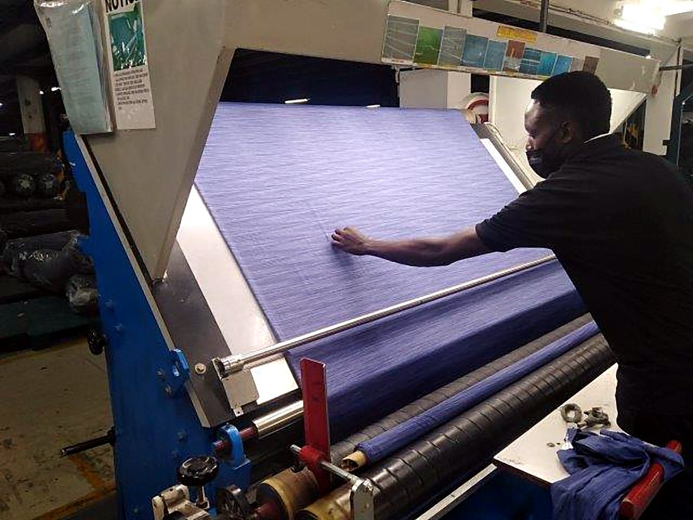
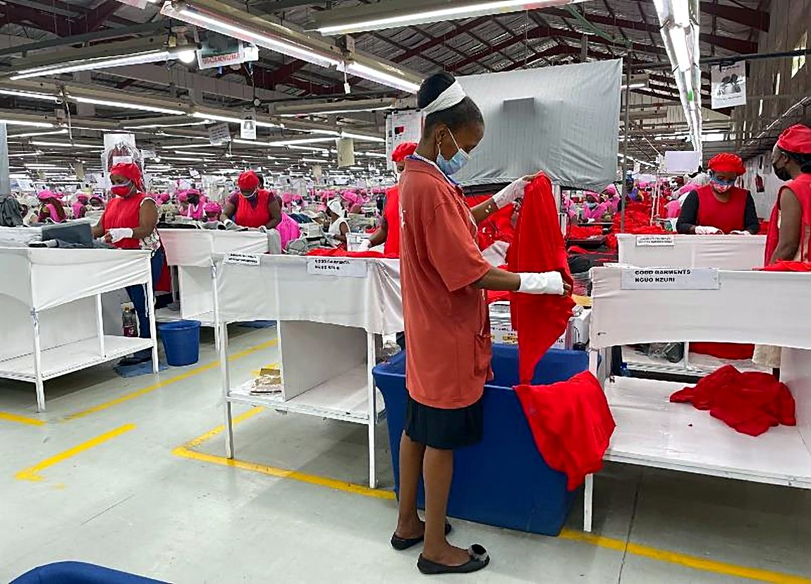
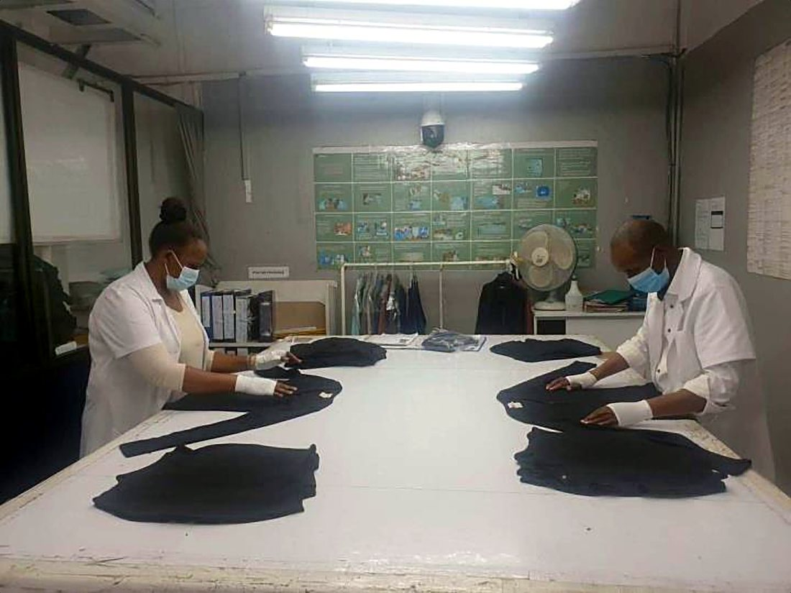
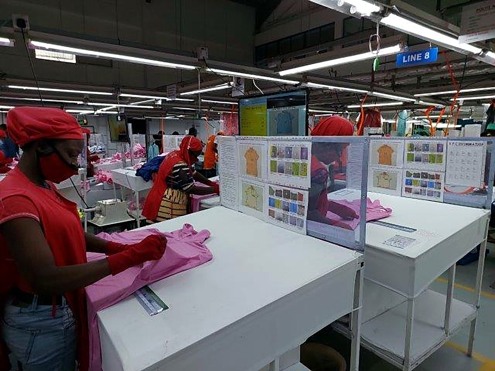
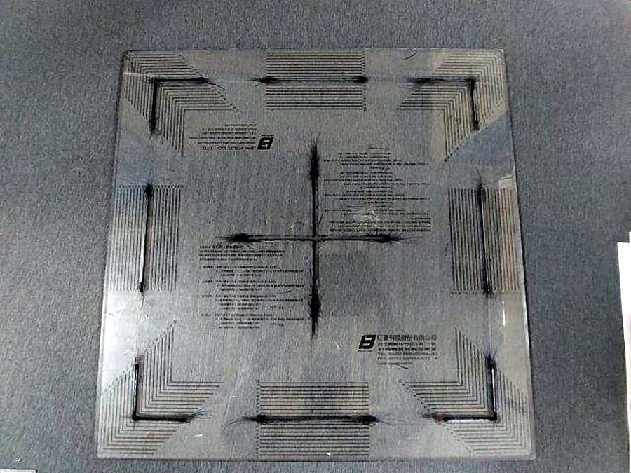

Quality
Checked at every stage, not just the end.
Fabric inspection
4-point system, 10% of every dye lot on arrival.
Trims & accessories
AQL 1.0, Level II sampling before issue to lines.
Cut panel inspection
Panel checks before bundling reaches the sewing floor.
In-line inspection
AQL 1.0/1.5 with roving QC: two auditors per line, every line.
End-line & finishing
100% end-of-line checking plus a finishing audit.
Final inspection
AQL 1.0/1.5/2.5 to buyer spec, with a 100% accuracy check.
Product safety
Broken-needle control and 100% metal detection before packing.





On-site testing lab. GSM cutting and weighing, shrinkage testing, pull-strength testing, colour assessment in a UL3500 comparison cabinet with Munsell kit, humidity and lux monitoring, plus 100% metal and needle detection on everything that ships.